An interactive explainer
Image encoders in vision-language models: SigLIP, its rivals, and how they take any image size
A language model reads tokens. An image is not tokens. Something has to stand between the two, and that something is the image encoder — almost always a Vision Transformer, almost always trained on image-text pairs, and in most open models released since 2024, almost always SigLIP. This piece takes that encoder apart. We build the patch pipeline from scratch with real numbers, derive why SigLIP's sigmoid loss lets you train a strong model on four chips in one day where CLIP needed hundreds, walk through the three different answers the field has found to the question "what if the image is not 224×224?", and finish with what actually makes the encoder fast at serving time. By the end you should be able to look at any VLM model card and know exactly what its vision tower is doing.

Here is the uncomfortable fact about vision-language models: the language model does not see your image. It sees a short list of vectors that some other network produced, and it has no way to ask for more. If the encoder threw away the small print on the receipt, no amount of reasoning in the language model gets it back. If the encoder squashed a 3000×500 panorama into a square, the model will read stretched text and confidently get it wrong. The encoder sets a hard ceiling on what the whole system can perceive.
So there are really only three questions worth asking about a vision encoder, and every design choice you will read about is an answer to one of them. What did it learn? — that is the training loss, and it decides whether the features are good at naming things, at locating things, or at reading text. What can it take as input? — that is the resolution policy, and it decides whether a document is legible. How much does it hand over? — that is the token budget, and it decides both cost and detail.
We will go through all three. The anchor is SigLIP, because it is the default choice in an enormous number of open models — PaliGemma, Idefics, InternVL's smaller variants, LLaVA-OneVision, Qwen2-VL's ancestors, and most of the small VLMs you will find on Hugging Face. But SigLIP is one point in a space, and the space is more interesting than the point.
A note on words before we start. A token is one vector in the sequence a transformer processes. A patch is one small square of pixels cut out of the image; each patch becomes one token. A ViT, or Vision Transformer, is a transformer whose input tokens are image patches. OCR means optical character recognition, which here just means reading text that appears inside a picture. Every other term gets defined where it first shows up.
1. From pixels to tokens
Start with the simplest possible thing and make it concrete. You have an image of 224×224 pixels with 3 colour channels. A ViT with patch size 16 cuts it into a grid of non-overlapping squares, each 16×16 pixels. Along the width that gives 224/16 = 14 patches. Along the height, the same: 14. So the grid is 14×14, which is 196 patches, and therefore 196 tokens.
Each patch holds 16×16×3 = 768 numbers. The model flattens those 768 numbers into a vector and multiplies it by a learned matrix $\vW \in \mathbb{R}^{768 \times d}$ to get a $d$-dimensional token, where $d$ is the model's hidden width — 768 for a "Base" model, 1024 for "Large", 1152 for SigLIP's So400m. In code this is not written as a reshape plus a matrix multiply; it is written as a single 2-D convolution with kernel size 16 and stride 16, which computes exactly the same thing and is faster:
# The whole "patchify" step, in one line of PyTorch.
patch_embed = nn.Conv2d(in_channels=3, out_channels=d,
kernel_size=16, stride=16)
x = patch_embed(image) # (B, 3, 224, 224) -> (B, d, 14, 14)
x = x.flatten(2).transpose(1, 2) # -> (B, 196, d) 196 tokens of width dSymbols: $B$ is the batch size (how many images at once), 3 is red-green-blue, $d$ is the hidden width. The convolution has stride equal to its kernel size, so the windows never overlap — every pixel lands in exactly one patch.
Now the model has 196 vectors but no idea where any of them came from. Attention is permutation-invariant: shuffle the tokens and the output shuffles with them, unchanged. So we add a positional embedding, a learned vector per grid position, one for each of the 196 slots. This is a table of shape $(196, d)$, added element-wise to the tokens. Remember this table — it is the single thing that makes variable resolution hard, and half of this blog is about what people do to it.
From there it is an ordinary transformer: $L$ blocks of multi-head self-attention plus a feed-forward network, with layer normalisation. At the end you have 196 output vectors, one per patch. For a classification or retrieval model you also need a single vector for the whole image. CLIP does this with a special extra "class token" prepended to the sequence, whose output is taken as the image embedding. SigLIP instead uses a MAP head — short for multi-head attention pooling — which is one attention layer with a single learned query vector that attends over all 196 patch outputs and returns one vector. It is a learned weighted average, and it works slightly better than the class token.
Play with the widget for a moment, because two numbers in it drive everything that follows. First, the token count is quadratic in the side length: doubling the resolution from 224 to 448 does not double the tokens, it multiplies them by four, from 196 to 784. Second, the cost of self-attention is quadratic in the token count, so doubling the resolution multiplies attention cost by sixteen. Going from 224 to 896 pixels multiplies attention cost by 256. That single fact is why variable resolution is a research topic and not a checkbox.
2. CLIP's loss, and the problem with the batch
A ViT is just an architecture. What makes it useful is what you train it on. The dominant recipe since 2021 is contrastive image-text pretraining: take hundreds of millions of (image, caption) pairs scraped from the web, and train two towers — a ViT for images, a text transformer for captions — so that an image sits close to its own caption and far from everyone else's. No human labels, no fixed set of classes. The supervision is just the fact that this alt-text was next to this image.
CLIP does this with a softmax loss. Take a batch $\mathcal{B}$ of $|\mathcal{B}|$ pairs. Run the image tower $f$ on image $I_i$ and the text tower $g$ on caption $T_i$, then normalise both to unit length:
$$ \vx_i = \frac{f(I_i)}{\lVert f(I_i) \rVert_2}, \qquad \vy_i = \frac{g(T_i)}{\lVert g(T_i) \rVert_2} $$
$\lVert \cdot \rVert_2$ is the Euclidean length of the vector, so dividing by it makes every embedding sit on the unit sphere. That means the dot product $\vx_i \cdot \vy_j$ is exactly the cosine of the angle between them: $+1$ if they point the same way, $0$ if perpendicular, $-1$ if opposite. The loss is then
$$ -\frac{1}{2|\mathcal{B}|}\sum_{i=1}^{|\mathcal{B}|} \Bigg( \underbrace{\log \frac{e^{t\,\vx_i \cdot \vy_i}}{\sum_{j=1}^{|\mathcal{B}|} e^{t\,\vx_i \cdot \vy_j}}}_{\text{image} \rightarrow \text{text}} + \underbrace{\log \frac{e^{t\,\vx_i \cdot \vy_i}}{\sum_{j=1}^{|\mathcal{B}|} e^{t\,\vx_j \cdot \vy_i}}}_{\text{text} \rightarrow \text{image}} \Bigg) $$
Symbols: $i$ indexes the "correct" pair we are scoring, $j$ runs over the whole batch as candidates, and $t$ is a learned scalar called the temperature, parameterised as $t = e^{t'}$ so it stays positive. The first term asks "given this image, is its own caption the most likely one out of all $|\mathcal{B}|$ captions in the batch?" The second asks the mirror question. Both are ordinary cross-entropy over $|\mathcal{B}|$-way classification problems, which is why the loss is written twice — softmax is not symmetric, so you have to normalise once across rows and once across columns.
Here is where it hurts. To compute one denominator you need every similarity in a whole row, which means every text embedding in the batch. Training runs across many accelerators with the batch split between them, so each chip holds only its own slice. Getting a denominator therefore requires an all-gather: every device sends its embeddings to every other device. Then each device materialises the full $|\mathcal{B}| \times |\mathcal{B}|$ matrix of similarities in memory. And because a naive softmax overflows in floating point, the standard fix is to subtract the row maximum first, which is another full pass over the row.
At a batch size of 32,768 that matrix has 32,768² ≈ 1.07 billion entries. In 32-bit floats that is 4.3 GB, on every device, just for the loss. Contrastive learning wants big batches — more captions in the batch means harder negatives means a sharper training signal — and the softmax loss makes big batches expensive in exactly the wrong way, quadratically. CLIP's largest ViT took 12 days on 256 V100 GPUs.
3. SigLIP: one sigmoid per pair
SigLIP's change is small enough to state in a sentence and consequential enough to have reshaped the field: stop normalising across the batch. Instead of asking "which of these 32,768 captions belongs to this image", ask, for every one of the $|\mathcal{B}|^2$ pairs separately, a yes-or-no question: "do these two go together?" That turns one giant multi-class problem into a pile of independent binary classification problems, and binary classification is trained with a sigmoid, not a softmax:
$$ -\frac{1}{|\mathcal{B}|}\sum_{i=1}^{|\mathcal{B}|}\sum_{j=1}^{|\mathcal{B}|} \log \frac{1}{1 + e^{\,z_{ij}\,(-t\,\vx_i \cdot \vy_j + b)}} $$
Symbols: $i$ indexes images and $j$ indexes texts, so the double sum walks over every pair in the batch. $z_{ij}$ is the label, $+1$ when $i = j$ (a real pair) and $-1$ otherwise. $t$ is the same learned temperature as before. $b$ is new: a learned scalar bias. The expression $1/(1+e^{-u})$ is the logistic sigmoid, which maps any real number to a probability between 0 and 1, so the whole term is the log-likelihood of getting that one yes/no answer right.
The $z_{ij}$ trick is worth pausing on because it is why the formula has no minus signs scattered through it. When $z_{ij} = +1$ the term inside the exponent is $-t\,\vx_i\!\cdot\!\vy_j + b$, so the loss falls as the similarity rises — the pair is pushed together. When $z_{ij} = -1$ the sign flips to $+t\,\vx_i\!\cdot\!\vy_j - b$, so the loss falls as similarity drops — the pair is pushed apart. One expression, both behaviours.
Why the bias starts at −10
There is a problem hiding in that double sum. In a batch of 32,768 there are 32,768 positive pairs and 32,768² − 32,768 ≈ 1.073 billion negative pairs. The ratio is about 32,767 negatives for every positive. At the start of training the embeddings are random, similarities are near zero, and the sigmoid outputs about 0.5 for every pair — meaning the model is confidently wrong on a billion negatives at once. The gradient from that imbalance is enormous, and the first few optimisation steps are spent violently correcting a bias that has nothing to do with the actual task.
The learned bias $b$ fixes this. SigLIP initialises $t' = \log 10$ (so $t = 10$) and $b = -10$. With $b = -10$ and similarities near zero, the sigmoid argument starts around $-10$, so the model's initial guess for every pair is $\sigma(-10) \approx 0.000045$ — "almost certainly not a match". That is the correct prior, since only 1 in 32,768 pairs is a match. Training starts near the right answer instead of having to walk there. This is one learned scalar, and without it the loss is much harder to optimise.
The chunked implementation: never build the big matrix
Because every pair is an independent term, nothing has to be normalised across devices, and that changes the whole distributed picture. Say you have $D$ devices and a per-device batch of $b = |\mathcal{B}|/D$. SigLIP rewrites the loss as
$$ -\frac{1}{|\mathcal{B}|} \underbrace{\sum_{d_i=1}^{D}}_{\text{each device}} \;\; \underbrace{\sum_{d_j=1}^{D}}_{\text{ring swaps}} \;\; \underbrace{\sum_{i=bd_i}^{b(d_i+1)}\sum_{j=bd_j}^{b(d_j+1)} L_{ij}}_{\text{one local } b \times b \text{ block}} $$
In words, and this is the whole algorithm: each device starts holding its own $b$ images and $b$ texts, and computes the $b \times b$ block of the loss between them — which contains all its positives. Then the devices pass their text embeddings one step around a ring, so device 1 now holds its own images and device 2's texts, and each computes another $b \times b$ block and adds it in. After $D$ such rotations every image has been scored against every text, and a single sum across devices finishes the job.
The memory at any instant is $b^2$, not $|\mathcal{B}|^2$. With $|\mathcal{B}| = 32{,}768$ across $D = 256$ devices, $b = 128$, so each device holds a 128×128 block of 16,384 numbers instead of a billion — a factor of 65,536 less. And a ring of $D$ small device-to-device swaps is typically faster than the two all-gathers the softmax needs. There is no all-gather anywhere in SigLIP training.
What it bought
Three results from the SigLIP paper, all with real numbers. First, the small-batch regime: below a batch size of 16k, sigmoid beats softmax by a wide margin. This is the opposite of what people expected — everyone assumed big batches were essential — and it happens because softmax's denominator is a noisy estimate when there are few candidates in it, while the sigmoid's per-pair question does not care how many other pairs are around.
Second, the large-batch regime: they pushed to a batch size of one million, which nobody had done, and found the benefit flattens out. Both losses peak at around 32k and then get worse. The same holds for a multilingual version trained on over 100 languages, where going past 32k hurts a 36-language retrieval benchmark. That is a genuinely useful negative result: 32k is enough, stop buying chips.
Third, the efficiency. Using a frozen pretrained image tower and training only the text tower (a setup called SigLiT), four TPUv4 chips for one day reach 79.8% zero-shot ImageNet accuracy; two days with a bigger frozen tower reach 84.5%. Training the image tower too, from a public checkpoint, 16 chips for three days reach 71.0%, and 32 chips for five days reach 73.4%. Compare that to CLIP's roughly 10 days on 256 TPUv3 cores. Zero-shot accuracy means the model was never trained on ImageNet labels at all — you classify by embedding the text "a photo of a {class}" for all 1000 classes and picking the nearest one.
| Setup | Image / text tower | Batch | TPUv4 chips | Days | ImageNet 0-shot |
|---|---|---|---|---|---|
| Frozen image tower (SigLiT) | B/8 → L | 32k | 4 | 1 | 79.8% |
| g/14 → L | 20k | 4 | 2 | 84.5% | |
| Both towers trained (SigLIP) | B/16 → B | 16k | 16 | 3 | 71.0% |
| B/16 → B | 32k | 32 | 2 | 72.1% | |
| B/16 → B | 32k | 32 | 5 | 73.4% |
From Table 1 of the SigLIP paper. The two frozen-tower rows start from public checkpoints trained elsewhere, which is why they reach much higher accuracy for far less compute — they are only learning the text side and the alignment between the two.
4. The encoder zoo: what each training loss teaches
SigLIP is one loss. There are four other families in wide use, and the differences between them are not cosmetic — each one produces features that are good at a different thing. This matters because you generally freeze the encoder when you build a VLM, so whatever it learned is what you get.
Contrastive, upgraded: SigLIP 2
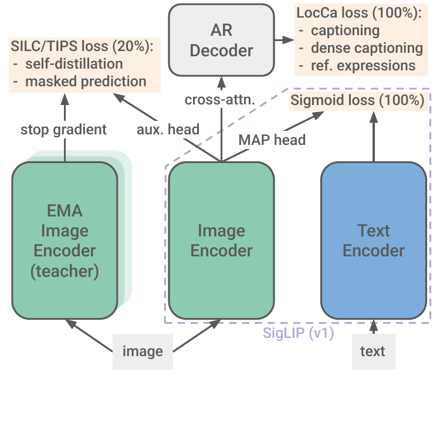
SigLIP 2 keeps the architecture identical, so you can swap the weights into existing code, and stacks three more training signals on top. It is worth going through each, because each one buys a specific capability.
A caption decoder (from LocCa). They attach a standard transformer decoder with cross-attention to the un-pooled patch features — that is, the 256 patch vectors before the MAP head squashes them to one. The decoder has the same shape as the text encoder but with half the layers, plus cross-attention. It is trained on three targets at once: write a caption for the image; given a phrase, predict the bounding box of the region it describes; and given a bounding box, write a caption for that region. The region annotations are produced automatically by pulling n-grams out of the alt-text and running an open-vocabulary detector on them. Half the time the caption is predicted "in parallel" — all tokens at once from mask tokens, with no causal mask — which forces the image features to carry the information rather than letting the decoder's own language modelling do the work. This decoder is thrown away after training; it exists only to shape the encoder. What it buys: better OCR and much better localisation.
Self-distillation (from SILC). The encoder is copied into a "teacher" whose weights are an exponential moving average of the student's — that is, a slowly updated running average, which is more stable than the student itself. The student is shown 8 small crops of the image, the teacher one full view, and the student must match the teacher's output. Nobody supervises what that output should be; the only requirement is consistency between a part and the whole. What it buys: patch features that know about local structure.
Masked prediction (from TIPS). 50% of the student's embedded patches are replaced with a learned mask token, and the student must reproduce the teacher's features at exactly those masked positions. Same loss as above but applied per-patch rather than to the pooled vector. What it buys: dense features good enough for segmentation and depth.
The staging matters. These two extra losses are switched on only at 80% of training, with the teacher initialised from the student at that moment, because running all four losses for the whole run would be far more expensive in compute and memory. Loss weights are 1 and 0.25, then scaled again by 0.25, 0.5, 1.0 and 0.5 for the B, L, So400m and g sizes — the bigger the model, the less it needs the dense-feature push, so the weight is tuned per size to keep both the semantic and the dense benchmarks healthy. Training is 40 billion examples at batch size 32k on up to 2048 TPUv5e chips, over the WebLI dataset of 10 billion images and 12 billion alt-texts in 109 languages, mixed 90% English and 10% other.
Self-supervised: DINOv2 and DINOv3
The DINO family drops text entirely. Training is pure self-distillation on images: student sees crops, teacher sees the whole picture, student matches teacher, teacher is an EMA of the student. No captions, no labels. Because nothing ever asks the model to name what it sees, DINO features are unusually good at where and unusually weak at what — they excel at segmentation, depth, correspondence and tracking, and lag on anything language-shaped.
DINOv3 scales this to a 6.7B-parameter ViT with 40 layers, width 4096, patch size 16, trained on 1.7 billion curated images. Two details are worth knowing. It uses four register tokens — extra learnable tokens appended to the sequence that carry no image content. Large ViTs have a habit of hijacking a few unimportant patches to store global summary information, which puts ugly high-magnitude spikes in the feature map; registers give the model somewhere else to put that, and the artefacts disappear. It also introduces gram anchoring to fix a problem that only shows up at scale: as training goes long, dense features slowly degrade even while global features keep improving. Gram anchoring adds a loss term that keeps the Gram matrix of the patch features — the matrix of all pairwise similarities between patches — close to that of an earlier, healthier checkpoint of the same model. You are anchoring the relationships between patches, not the patch values themselves, so the model stays free to improve while its spatial structure is held in place.
Autoregressive: AIMv2
AIMv2 asks a completely different question. Attach a multimodal decoder to the encoder and train it to autoregressively generate both the raw image patches and the caption tokens — image patches with a mean-squared-error loss on pixel values, text with the usual next-token cross-entropy. There is no contrastive loss at all and no batch-level interaction, so it is embarrassingly simple to scale. The 3B model reaches 89.5% on ImageNet-1k with a frozen trunk. Its features are strong for language-shaped tasks and comparatively weak on spatial ones, which is the mirror image of DINO's profile.
The twist: Perception Encoder
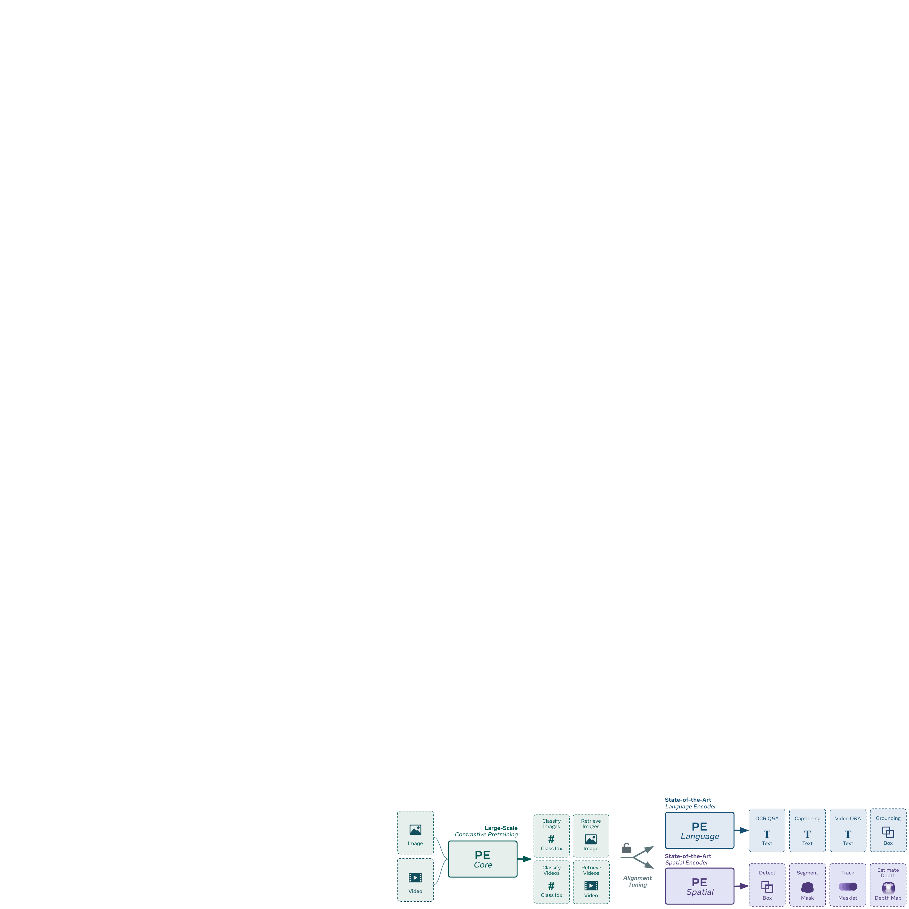
Meta's Perception Encoder makes a claim that reframes the whole comparison. Their finding is that a well-trained contrastive model already contains features as good as DINOv2's for spatial work and as good as AIMv2's for language work. The catch is that those features live at different intermediate layers, and the network does not output them — the last layer has specialised itself for the contrastive objective and discarded what it did not need. So they add "alignment tuning" to pull the useful intermediate features to the end of the network, and get one encoder that is strong everywhere: 86.6 average ImageNet robustness, 76.9 zero-shot Kinetics-400 video classification, 94.6 DocVQA and 80.9 InfographicVQA with an 8B language model, and 66.0 box mAP on COCO detection.
The recipe details are almost mundane and add up to a lot: progressive resolution stages (10B samples at 98 pixels, 8B at 154, 4B at 224, 2B at 336, keeping total compute fixed), 2D RoPE added to every attention layer on top of the original position embeddings for +0.3% ImageNet and +0.9% robustness, an attention-pooling probe that keeps the class token as an input, and heavy augmentation — random cropping, brightness and saturation jitter, horizontal flip — which improves ObjectNet by 2.4%. Note that horizontal flip does not hurt OCR, which is the kind of thing you can only learn by trying it.
| Family | Training signal | Best at | Weak at | Typical sizes |
|---|---|---|---|---|
| CLIP | softmax contrastive on image-text | zero-shot naming, retrieval | dense/spatial, needs huge batches | B/16 to L/14, 336px |
| SigLIP | pairwise sigmoid on image-text | same, far cheaper to train | dense/spatial, localisation | B/16, L/16, So400m/14 |
| SigLIP 2 | sigmoid + caption decoder + self-distillation | all-round; OCR and localisation | nothing badly; costs more to train | B, L, So400m, g; NaFlex variants |
| DINOv2/v3 | image-only self-distillation | segmentation, depth, tracking | anything needing language | S to 7B, patch 14/16 |
| AIMv2 | autoregressive on pixels + text | language-shaped tasks, simple scaling | spatial tasks | L, H, 1B, 3B |
| Perception Encoder | contrastive + alignment tuning | strong on all three at once | newest, least tooling | B, L, G (2B) |
| InternViT | contrastive, then trained inside the VLM | high-resolution documents | very large (6B) for what it is | 300M, 6B |
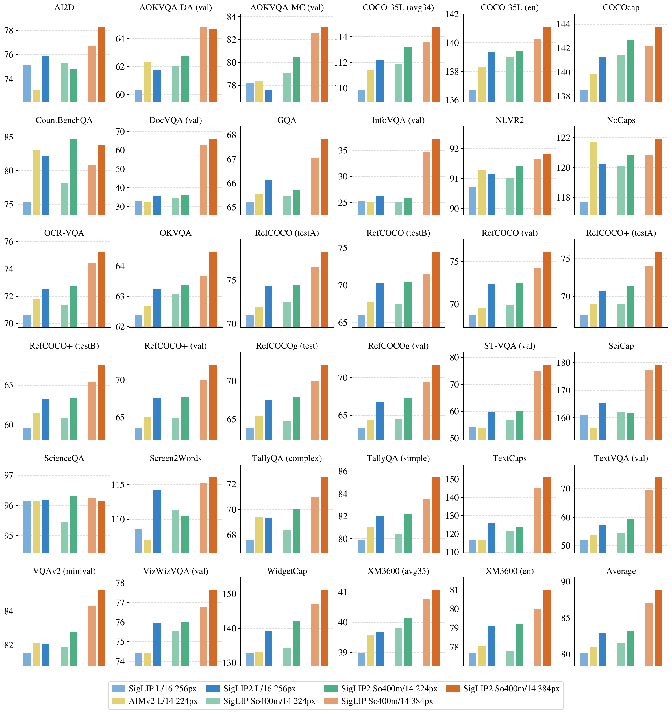
5. Why one fixed square breaks
Every encoder described so far was trained at one fixed square resolution — 224×224, or 384×384, or 448×448. The positional embedding table has exactly one entry per grid slot, and the grid has a fixed shape, so the input must have that shape too. In practice that means every image gets resized to a square, whatever it originally was.
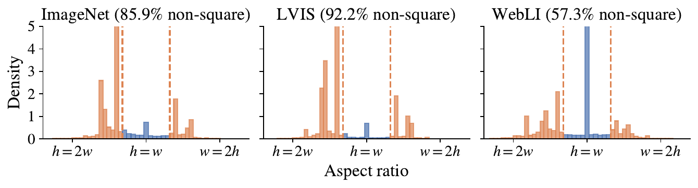
Two things go wrong, and they are different problems with different fixes.
Distortion. A 1200×600 photo squashed to 224×224 has its width compressed 5.4× and its height 2.7×. Circles become ellipses, letters become narrow and tall. A model trained on distorted images learns to cope, but it is spending capacity on that instead of on the task, and at test time an unusual aspect ratio is out of distribution. The alternative — pad to a square with grey bars — avoids the distortion but wastes tokens on the bars. A 3:1 panorama padded to square is 67% padding, so two thirds of your compute processes nothing.
Lost detail. This is the more serious one. Take an A4 page scanned at 2480×3508 pixels — a normal 300 dpi scan. Resize to 224×224 and each output pixel is an average of roughly 11×16 = 176 input pixels. Body text at 10-point on that scan is about 40 pixels tall; after the resize it is 2.5 pixels tall. There is no model, however large, that reads 2.5-pixel-tall text, because the information is gone before the model sees it. This is why fixed-resolution VLMs were bad at documents, and why every serious VLM since 2024 has done something about resolution.
The widget previews the three answers the field converged on, which are the next three sections. Tile it: keep the encoder fixed at 448×448 and run it several times over crops. Go native: change the encoder so it accepts whatever grid the image produces. Go flexible: train one model to handle several sequence lengths and let the caller pick. They are not mutually exclusive — InternVL tiles, Qwen goes native, SigLIP 2 ships both a tiled-friendly fixed variant and a flexible one.
6. Answer 1: cut the image into tiles
The cheapest answer requires no change to the encoder at all. If your encoder takes 448×448, then to look at a 896×1344 image you cut it into 2×3 = 6 tiles of 448×448, run the encoder six times, and concatenate the six sets of patch features into one long sequence. Nothing about the ViT changes. This is what LLaVA-NeXT calls AnyRes and what InternVL calls dynamic high resolution, and it is still the most widely deployed approach because it works with any off-the-shelf encoder.
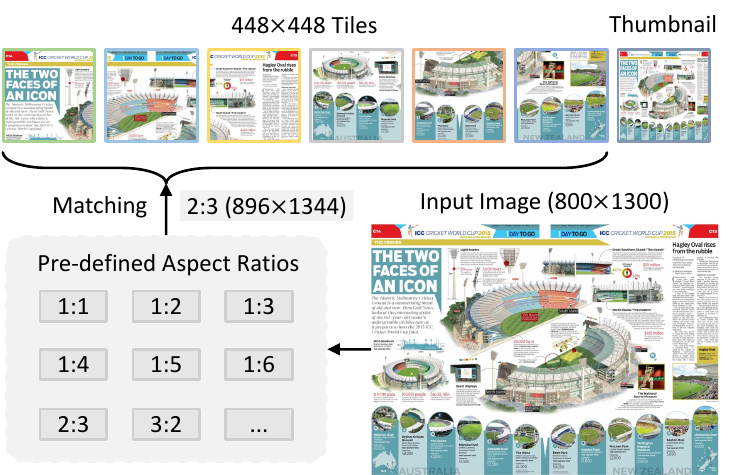
The mechanism has four steps, and each exists for a reason.
Step 1: match an aspect ratio. With a maximum of 12 tiles, there are 35 possible tile layouts — 1:1, 1:2, 2:1, 3:1, 2:6 and so on. The system computes the input image's aspect ratio and picks the layout closest to it. A 1600×900 image (ratio 1.78) matches the 2:1 layout better than 1:1 or 3:1.
Step 2: resize and split. The image is resized so its dimensions are exactly the chosen tile grid times 448, then cut. Because the layout was chosen to be close to the true ratio, this resize distorts far less than squashing to a square would.
Step 3: add a thumbnail. Tiles have a real weakness: a tile is a crop, and a crop has no idea what is around it. If a chart's legend is in tile 1 and its bars are in tile 5, no single tile contains both. So the whole image, scaled down to 448×448, is appended as one extra tile to restore global context.
Step 4: compress with pixel shuffle. Here is the arithmetic problem. A 448×448 tile at patch size 14 gives (448/14)² = 32×32 = 1024 tokens per tile. With 12 tiles plus a thumbnail that is 13 × 1024 = 13,312 tokens for one image, which would swamp the language model's context. InternVL applies pixel shuffle: take a 2×2 block of neighbouring patch features, each of width $d$, and concatenate them along the channel dimension into one vector of width $4d$, then project back down. Four tokens become one. So 1024 → 256 tokens per tile, and 13,312 → 3,328 for the whole image. The information is not thrown away — it is folded into the channel dimension — but the sequence gets four times shorter, and attention four times shorter is sixteen times cheaper.
Training used 1 to 12 tiles. At test time this scales up to 40 tiles with no retraining, which covers 4K resolution, because the encoder never sees anything but a 448×448 square — you are just calling it more times. That zero-shot extension is tiling's real selling point.
What tiling costs you: the encoder genuinely cannot see across tile boundaries, since each tile is a separate forward pass with its own attention. A table row that spans two tiles is seen as two unrelated fragments, and only the language model, much later, can stitch them. The thumbnail helps with layout but has no fine detail. Tiling also produces a lot of tokens, and the count grows with the number of tiles rather than with how much information is actually in the picture — a blank margin gets its own tile and its own 256 tokens.
7. Answer 2: native resolution, and packing
The other direction is to change the encoder so it takes the image as it is. The obvious objection is batching: hardware wants fixed shapes, and if image A is a 14×20 grid and image B is a 30×9 grid, they do not stack into a tensor. NaViT's answer, called Patch n' Pack, is borrowed from language modelling, where packing several short documents into one fixed-length sequence has been standard practice for years.
Patch n' Pack. Two images with different shapes are cut into patches, flattened into rows of tokens, and laid end to end in a single sequence of fixed length. A block-diagonal attention mask then makes sure image A's patches attend only to A's, and B's only to B's — so one forward pass processes two native shapes without either one contaminating the other. The leftover slots at the end are padding, and the mask excludes them too.
Three architectural changes make this work, and all three are small.
Masked self-attention. Build an attention mask that is block-diagonal: entry $(p, q)$ is allowed only when patches $p$ and $q$ came from the same image. Everything else is masked out. This is exactly the same machinery as a causal mask in a language model, with a different pattern.
Masked pooling. The pooling head that produces one vector per image now has to produce several vectors from one sequence, each pooling only over its own image's patches. Same masking idea applied to the pooling attention.
Factorized positional embeddings. This is the interesting one. The standard learned table has one entry per slot in a fixed grid, which cannot index a grid it has never seen. Pix2Struct's fix was a 2-D table of size $[\text{maxLen}, \text{maxLen}]$ indexed by $(x, y)$ — but then every $(x, y)$ combination has to appear during training or its entry is never learned. NaViT instead factorises: keep two separate tables, $\phi_x$ for the column index and $\phi_y$ for the row index, and add them:
$$ \text{pos}(x, y) = \phi_x(x) + \phi_y(y) $$
Now a patch at column 37 and row 5 works even if that exact pair never occurred in training, as long as column 37 appeared in some image and row 5 in some image. The number of parameters drops from $\text{maxLen}^2$ to $2 \cdot \text{maxLen}$. NaViT also tries a fractional version where the input is $r = p / \text{side length}$, the relative position along the axis in $[0, 1]$, which makes the embedding independent of image size entirely — though it then hides the aspect ratio, which survives only implicitly in how many patches there are.
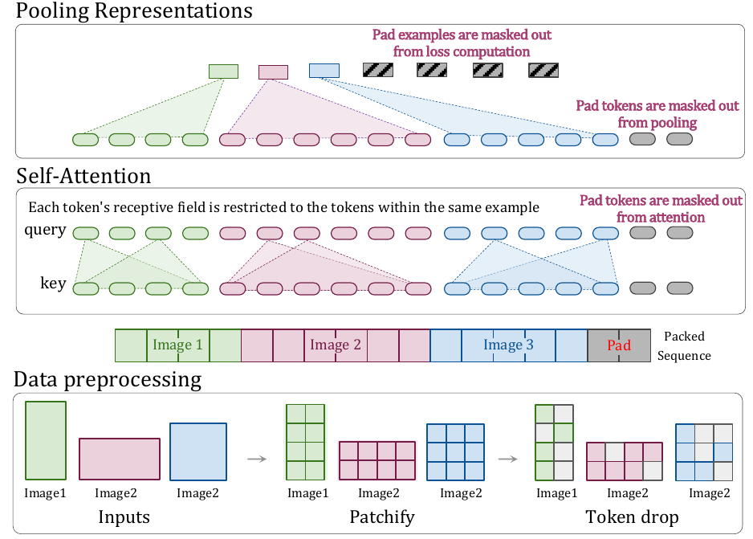
What packing enables during training
Once the sequence is a flat list of patches with an attention mask, two training tricks that were awkward before become natural.
Continuous token dropping. Randomly deleting some input patches speeds up training. In a fixed-shape batch every image must drop the same fraction, or the shapes stop matching. With packing, each image can drop a different fraction — some images get through completely intact, which narrows the gap between what training looks like and what inference looks like. The drop rate can also be scheduled over the course of training.
Resolution sampling. Each image can be resampled to a different total pixel count while keeping its aspect ratio. NaViT found the best strategy is to sample the side length directly rather than the area, from a truncated normal distribution biased toward smaller values. Biasing small raises throughput, since small images are cheap, while the tail keeps the model exposed to large ones.
Two efficiency worries turn out to be non-issues. Padding: since sequences rarely fill exactly, some slots are wasted — but with greedy packing it is typically under 2% of tokens. And the quadratic attention cost of longer packed sequences: as the model's hidden width grows, attention becomes a smaller share of total cost compared to the feed-forward layers, so the packing overhead shrinks with model scale.
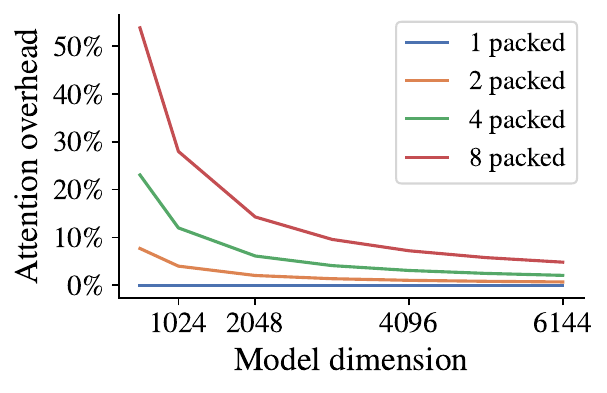
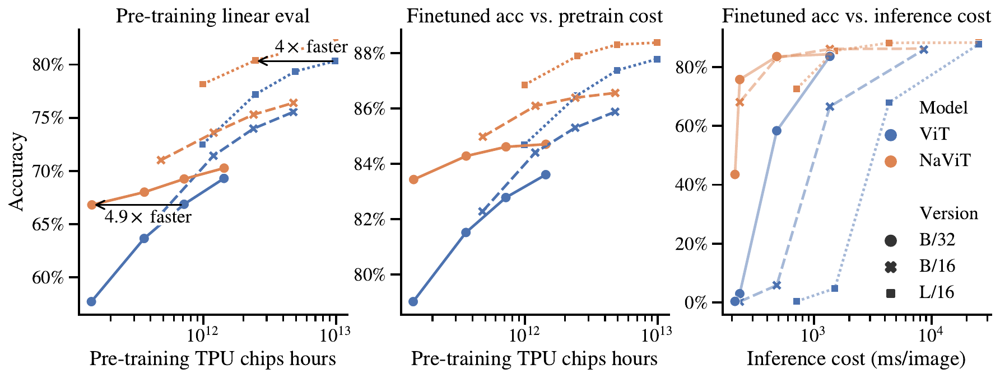
8. Answer 3: one model, many sequence lengths
Packing solves batching. It does not by itself solve the positional embedding when you want a single checkpoint to serve a thumbnail and a poster. Three production systems solve that three different ways, and they are worth comparing directly because the choice has real consequences.
SigLIP 2 NaFlex: resize the position table
NaFlex combines FlexiViT's idea (one model, several predefined sequence lengths) with NaViT's (native aspect ratio). The preprocessing rule: given a patch size and a target sequence length, resize the image so that both height and width are multiples of the patch size, keeping the aspect ratio distortion as small as possible, while producing at most the target number of patches. The distortion this leaves is at most $(\text{patch size} - 1)/\text{width}$ in one direction — for patch size 16 on a 1000-pixel-wide image, that is 15/1000 = 1.5%, which is nothing.
For the position embedding, they keep the learned table at 256 entries, treat it as a 16×16 grid, and bilinearly resize it, with anti-aliasing, to whatever non-square grid the image produced. A 1024-token image at 32×32 patches gets a 32×32 position grid, interpolated up from the 16×16 one. If the actual sequence is shorter than the target, the attention layers and the MAP head mask out the padding.
Training is a short adaptation, not a from-scratch run: take the standard checkpoint at 90% of training, switch to aspect-preserving resizing, and sample a sequence length uniformly from {128, 256, 576, 784, 1024} for each mini-batch. The last 10% of the learning-rate schedule is stretched by 3.75× so each of the five lengths gets enough steps. For the longest sequence they halve the batch size and double the steps to avoid running out of memory.
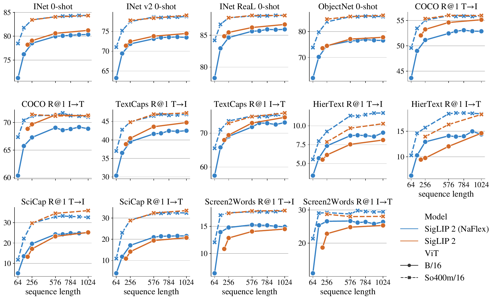
Pixtral: replace the position table with RoPE-2D
Mistral's Pixtral takes the more radical route: delete the learned absolute position embedding entirely and use rotary position embeddings in two dimensions. A rotary embedding does not add anything to the token; it rotates the query and key vectors inside each attention layer by an angle that depends on position. For a patch at position $(i, j)$ — row $i$, column $j$ — the transform is
$$ \text{RoPE-2D}\big(x^{(i,j)}, \Theta\big) = M^{(i,j)}_{\Theta}\, x^{(i,j)} $$
where $x^{(i,j)}$ is the $d$-dimensional query or key vector for that patch, and $M^{(i,j)}_\Theta$ is a block-diagonal rotation matrix. Its first 2×2 block rotates by angle $i\theta_1$, its second by $j\theta_2$, its third by $i\theta_3$, and so on — alternating between the row index and the column index down the dimensions, with $\Theta = [\theta_1 \dots \theta_{d/2}]$ a fixed set of frequencies chosen exactly as in standard 1-D RoPE.
The property that makes this work is relativity: because rotations compose by adding angles, the inner product between a query at $(i, j)$ and a key at $(i', j')$ depends only on the differences $i - i'$ and $j - j'$, never on the absolute positions. A grid the model has never seen is fine, because the model never learned about absolute grid slots in the first place — it only ever learned about relative offsets, and offsets of 3 columns look the same in a 14-wide grid as in a 90-wide one. No interpolation, no resizing, no retraining.
Pixtral adds three more things to its 400M-parameter ViT (24 layers, width 1024, 16
heads, patch size 16). Break tokens: an [IMAGE BREAK] token
is inserted between image rows and an [IMAGE END] token at the end. Without
them, a 4×9 image and a 6×6 image both flatten to 36 tokens and become
indistinguishable to the decoder; the break tokens make the row structure explicit.
Gating in the feed-forward layer: a GLU-style gate instead of a plain
MLP. Sequence packing with block-diagonal masks, the same as NaViT.
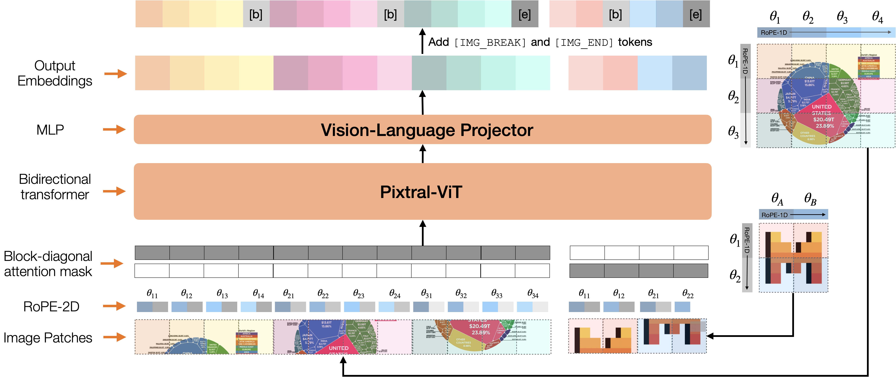
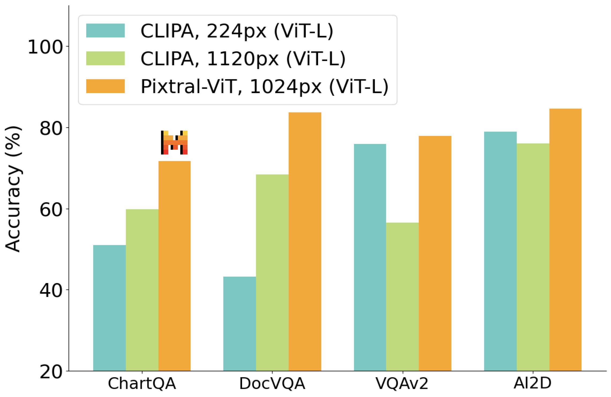
Qwen2.5-VL: native resolution plus window attention
Qwen2.5-VL runs natively too, but adds the piece that makes native resolution affordable at large sizes. Their ViT is 32 layers, hidden size 1280, 16 heads, intermediate size 3456, patch size 14, trained from scratch — the same encoder for the 3B, 7B and 72B models. Input height and width are resized to multiples of 28 (that is 2 patches, because of the 2×2 merge later) before patching.
The problem: with native resolution, a big image produces a lot of patches, and full attention is quadratic in that count. Qwen's fix is window attention in most layers. Attention is restricted to a 112×112-pixel window, which at patch size 14 is an 8×8 = 64-patch block. Cost then grows linearly in the number of patches rather than quadratically, because each patch attends to at most 64 others no matter how large the image is. Regions smaller than a full window are processed without padding, at their real size.
Only four of the 32 layers use full attention — layers 7, 15, 23 and 31, spread evenly through the depth. This is the whole design in one line: windows handle local structure cheaply, and four full-attention layers, placed every eight blocks, let information travel across the entire image. You can feel the effect in the attention widget above: the full-attention curve is the one that explodes, and the hybrid line stays close to the window line because it is 28 window layers plus 4 full ones.
Position encoding is 2D RoPE, as in Pixtral. For video, two consecutive frames are grouped into one 3-D patch unit, halving the token count, and the temporal component of the position encoding is tied to absolute time rather than frame index — so a video sampled at 2 frames per second and the same video at 10 fps produce consistent temporal positions, and the model can localise an event to a real second.
9. The connector, and the token budget
The encoder's output is a sequence of $N$ vectors of width $d_v$ — say 1024 vectors of width 1280 for a Qwen tile. The language model expects vectors of width $d_\ell$ — 3584 for Qwen2.5-VL-7B. Something has to bridge the two, and that something also decides how many tokens of the language model's context each image consumes. There are four common designs.
A linear layer. One matrix, $d_v \times d_\ell$. This is original LLaVA. Token count unchanged: 576 patches in, 576 tokens out.
A two-layer MLP. Same but with a hidden layer and a GELU non-linearity. LLaVA-1.5's upgrade, and still the most common choice. Token count unchanged.
Pixel shuffle or patch merging. Group a $k \times k$ block of spatially adjacent patch features, concatenate them along the channel axis into one vector of width $k^2 d_v$, then project to $d_\ell$ with an MLP. Token count divided by $k^2$. InternVL uses $k = 2$ giving 1024 → 256; Qwen2.5-VL's "MLP-based vision-language merger" is the same operation, grouping four spatially adjacent patches and passing them through a two-layer MLP. This is the dominant modern choice because it is cheap, keeps spatial order intact, and the compression is exact rather than learned-and-lossy.
A perceiver resampler. A small transformer with a fixed set of learned query vectors — say 64 — that cross-attend to all $N$ patch features and output exactly 64 tokens regardless of $N$. Used by Flamingo, Qwen-VL's first version, and Idefics2. The advantage is a constant token count no matter the input size. The disadvantage, which the field has largely concluded is decisive, is that it discards the spatial grid, and grounding and OCR suffer.
Now the arithmetic, end to end, for a real case. Take Qwen2.5-VL and a 1288×896 photo:
1288 x 896 pixels # already multiples of 28, no resize
/ 14 # patch size
= 92 x 64 patch grid = 5,888 patches # what the ViT processes
/ 4 # 2x2 merger in the connector
= 1,472 tokens # what the language model sees
Cost inside the ViT (window attention, 8x8 = 64-patch windows):
5,888 patches x 64 keys each # linear in patch count
vs 5,888 x 5,888 for full attention # 92x more work
Four of 32 layers use full attention, so the real cost is
28 window layers + 4 full layers.That is 1,472 tokens for one photo — roughly the length of a 1,100-word text prompt. It is also why every part of this pipeline is fought over: the connector's compression factor is multiplied through the entire language model, every layer, for the whole generation.
One thing the widget makes obvious: for a small language model the vision encoder is a large fraction of the total cost, and for a large one it almost vanishes. A 400M-parameter encoder in front of a 72B model is a rounding error. The same encoder in front of a 1.5B model can be a third of your latency. The right optimisation depends entirely on which side of that line you are on.
10. Running the encoder fast
Everything so far was about training and architecture. Here is what actually matters when you are serving. The order below is roughly the order of payoff.
Know where the time goes first
Vision encoder inference is a single forward pass over $N$ tokens — a pure prefill, with no autoregressive decoding, no KV cache, no sequential dependency. That makes it compute-bound, which is the opposite of language model decoding, which is memory-bandwidth-bound. Optimisations that help decoding — quantising weights to 4 bits, speculative decoding, better KV cache layouts — do little or nothing for the encoder. Optimisations that raise arithmetic throughput are what help.
Measure before you tune. Time the encoder alone and the language model alone. If the encoder is 8% of your latency, the entire content of this section is worth at most 8%, and you should be reducing token count instead — which is a language model optimisation that happens to be controlled by the vision side.
Use half precision and a fused attention kernel
Run in bf16 (bfloat16, a 16-bit floating point format with the same exponent range as fp32, so it does not need loss scaling). This is table stakes and roughly doubles throughput over fp32 on any modern accelerator.
Then use FlashAttention, or PyTorch's scaled_dot_product_attention, which
dispatches to it. FlashAttention computes attention without ever writing the
$N \times N$ attention matrix to memory, tiling the computation so intermediate results
stay in fast on-chip memory. For a ViT at 224 pixels with $N = 196$ this barely matters.
At native resolution with $N = 5{,}888$ it matters enormously, because the naive matrix
alone would be 5,888² ≈ 34.7 million entries per head per layer. Crucially,
FlashAttention accepts variable-length packed sequences with cumulative-length offsets,
which is exactly the block-diagonal structure that NaViT-style packing produces — so
packing and FlashAttention are designed for each other.
Batch by token count, not by image count
This is the one most people get wrong. With native resolution, "batch size 8" is meaningless: eight thumbnails and eight posters differ in cost by two orders of magnitude. Batch by total patches. Pack images into a fixed token budget — say 16,384 patches per batch — using a greedy first-fit, and run one forward pass with a block-diagonal mask. NaViT reports under 2% wasted padding with plain greedy packing, so there is little to gain from anything cleverer. The result is a steady, predictable load per step instead of a queue whose latency depends on what someone happened to upload.
Compile, but pay attention to shapes
torch.compile fuses the small operations around attention — layer norms,
residual adds, activations, the projections — and typically gives 10–30% on a ViT. The
catch is that every new input shape triggers a fresh compilation, and with native
resolution every image is a new shape. Two ways out, and you want both. Use
dynamic=True so a single compiled graph handles varying lengths. And bucket
your padding: round every packed sequence up to the next multiple of, say, 512 patches, so
you see a handful of distinct shapes rather than thousands. vLLM does exactly this kind of
shape management for multimodal encoders.
Cache image embeddings
A vision encoder is a pure function of its input: the same image always gives the same embedding. So hash the image bytes and cache the result. This is close to free and, in the workloads where it applies, larger than every other optimisation combined.
It applies more often than you would think. Multi-turn conversation about one image: the image is re-encoded on every turn unless you cache. Retrieval-augmented systems that show the same reference figures repeatedly. Agents that screenshot a mostly-static screen. vLLM's V1 architecture has both an "encoder cache" that keeps vision embeddings alive across the chunks of a chunked prefill so they are not recomputed per chunk, and prefix caching extended to hash image content alongside token IDs so a repeated image reuses its cached language-model KV entries too.
Cut tokens — the biggest lever, and the riskiest
Reducing the token count helps twice: less encoder work, and much less language model work for the entire generation. Four levers, from safest to most dangerous.
Pick a smaller resolution budget. Most serving stacks let you cap the
pixels per image. Qwen exposes min_pixels and max_pixels directly.
If your workload is photographs rather than documents, capping at 512×512 rather than
whatever the user uploaded costs almost nothing in accuracy. Measure it on your own data —
this is a one-line change with a large payoff.
Raise the merger's compression. Going from a 2×2 merge to 3×3 divides tokens by 9 instead of 4. This requires retraining the connector, and usually the language model too, but it is the cleanest structural win when you control training.
Prune tokens inside the language model. FastV observes that after the first couple of language model layers, attention to most visual tokens is very low, and drops the low-attention ones after layer 2. VisionZip selects a set of informative tokens and merges the rest. Both are training-free and drop into existing models. The honest summary of the evidence: at moderate reduction, 25–50%, both hold accuracy and can even improve it slightly on some benchmarks by removing distracting tokens. At aggressive reduction, 75–90%, accuracy degrades substantially, and the degradation is worst on exactly the tasks you bought high resolution for — OCR, fine-grained grounding, dense captioning. Benchmark on your own task, not on the paper's average.
Skip the thumbnail or reduce the tile count if you are tiling. Cheap to try, easy to revert.
Quantisation: less than you would hope
Because the encoder is compute-bound rather than memory-bound, weight-only quantisation — the kind that makes language model decoding fast — mostly does not help. It shrinks the weights, which is useful if you are short of memory, but the arithmetic still happens in higher precision after dequantisation. What does help is fp8 or int8 with quantised activations too, on hardware with matching tensor core support, since that raises real arithmetic throughput. Expect a smaller and more hardware-dependent win than on the language model side, and check accuracy on document tasks specifically — low-precision activations hurt fine detail first.
Overlap the encoder with everything else
Image decoding, resizing and normalisation are CPU work, and doing them on the request thread stalls the accelerator. Move preprocessing to a separate process, which is what vLLM V1 does. If you serve many images per request, the encoder for image $k+1$ can run while the language model prefills the tokens from image $k$. And in a multi-turn agent loop, start encoding the next screenshot while the current answer is still being generated — the encoder and the decoder use the hardware differently and overlap well.
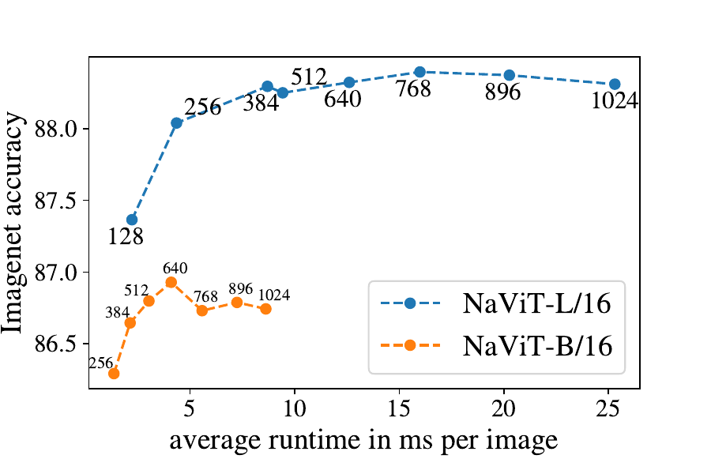
11. How to choose one
Everything above collapses into a fairly short decision list.
If you are building a general VLM and want one safe default: SigLIP 2, So400m size, at 384 or 512 pixels. It is the best all-round frozen encoder available with broad tooling support, it is a drop-in replacement for SigLIP in existing code, and it is multilingual. Use the NaFlex variant if aspect ratios in your data vary a lot.
If documents and screenshots are the workload: you need native resolution or aggressive tiling, and you need it more than you need a better loss. Qwen2.5-VL's encoder or Pixtral's are built for it; InternVL's tiling gets you there with an off-the-shelf encoder. The Pixtral ablation is the clearest evidence in this whole piece: on chart and document tasks the flexible encoder wins by a wide margin, and on natural images it barely matters.
If you need segmentation, depth, tracking or correspondence: DINOv3. A contrastive model's dense features are an afterthought; DINO's are the entire objective. Several systems run two encoders side by side — SigLIP for semantics, DINO for structure — and concatenate the features. It costs two forward passes and it works.
If you are training the encoder yourself: use the sigmoid loss. It is simpler to implement in distributed code, needs no all-gather, uses $b^2$ memory per device instead of $|\mathcal{B}|^2$, and is better at the small batch sizes you can actually afford. Target 32k batch and stop — the evidence that more is wasted is strong and comes from a run that went to a million.
If you are serving and it is too slow: measure the split first. Then, in order: cache image embeddings; cap the resolution budget; batch by token count with packing and FlashAttention; compile with dynamic shapes and bucketed lengths; and only then consider token pruning, with your own benchmark in hand.
What is still unsolved
- Extrapolation past the training resolutions. NaFlex interpolates well between its five training lengths and does not extrapolate beyond them. RoPE-2D extrapolates better in principle, but "better" is not "arbitrarily". Nobody has an encoder that is genuinely resolution-agnostic.
- Token count still scales with pixels, not with information. A page of dense tables and a page that is 90% white space cost nearly the same. A content-aware allocation — more tokens where there is more to see — is obviously right and nobody has made it work reliably.
- One encoder is asked to do incompatible jobs. Perception Encoder's result says the features for naming and the features for locating live at different depths of the same network and pull against each other at the output. Alignment tuning patches this. It does not explain it.
- Frozen encoders cannot ask for more. The language model gets one fixed view and no way to zoom. Systems that let the model re-encode a crop of interest are starting to appear, and they turn a one-shot pipeline into a loop with all the latency that implies.
The bottom line
The vision encoder is a small model doing an outsized job, and it is fully described by three numbers you can usually read straight off a model card: what it was trained on, what grid it accepts, and how many tokens it hands over. SigLIP's contribution was to make the first of those cheap, by noticing that a batch-wide softmax was never necessary and a per-pair sigmoid does the job on a fraction of the hardware. The variable-resolution work — NaViT's packing, NaFlex's resized position table, RoPE-2D, window attention — made the second one honest, so that a receipt is a receipt rather than a squashed square. The third is where the field still has the most room, and it is also the one you control at serving time. Next time a VLM misreads a chart, you now know exactly where to look first, and it is not the language model.